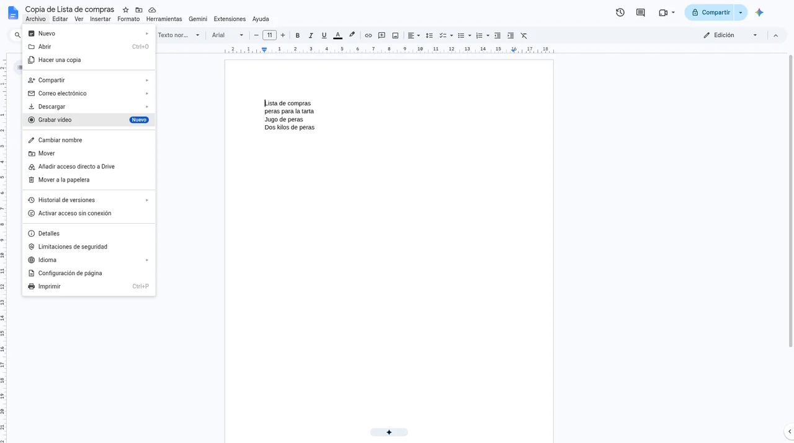
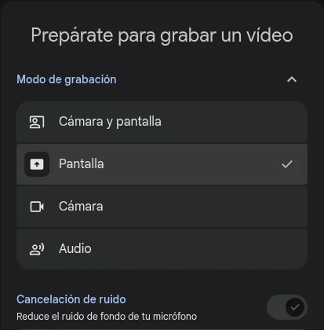
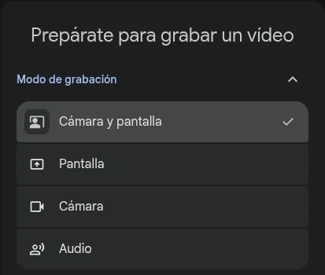
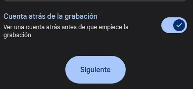
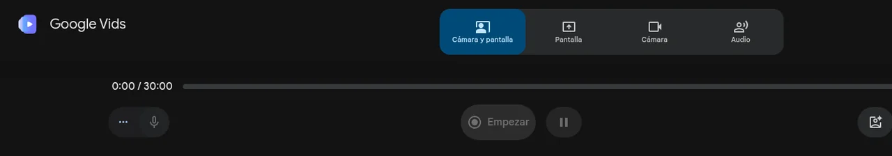

Curso de Google Documentos › Archivo › Lección 10
Lección 10 de 53 · menú Archivo
Cómo grabar un video desde Google Docs (cámara y pantalla)
Fecha del video: · Programado
¿Tenés que explicar un Google Doc? Con «Grabar vídeo», en el menú Archivo, grabás tu pantalla, tu cámara o solo tu voz sin salir del documento.
En el ejemplo usamos una copia de prueba de «Lista de compras». No se llegó a grabar nada. Para grabar hace falta Chrome o Edge; ver, compartir y borrar las grabaciones se puede desde cualquier navegador compatible con Drive. Según la ayuda de Google, la función puede estar disponible solo en algunas cuentas de trabajo o de instituciones educativas.
Paso 1: abrí Archivo → Grabar vídeo
Andá a Archivo y tocá «Grabar vídeo» (aparece con la etiqueta «Nuevo»). Se abre el estudio de grabación de Google Vids en una pestaña nueva, con el título «Prepárate para grabar un vídeo».

Paso 2: elegí el modo de grabación
En «Modo de grabación» elegís qué se graba: «Cámara y pantalla» (vos y tu pantalla), «Pantalla», «Cámara» (solo vos) o «Audio» (solo tu voz). Abajo podés activar la «Cancelación de ruido», que reduce el ruido de fondo del micrófono.


Si querés, dejá activada la «Cuenta atrás de la grabación» y tocá «Siguiente».

Paso 3: tocá «Empezar» y grabá
En el estudio de grabación tocá «Empezar» (también con Ctrl + Intro). Según la ayuda de Google, al terminar tocás «Finalizar» y con «Editar» abrís la grabación en Google Vids; también podés compartirla con «Compartir y copiar vínculo».

Mirá el Short
Estreno del Short: 25/11/2026 · 17:00 (hora Argentina)
Video relacionado: Google Docs: menú Archivo paso a paso (tutorial completo) — el video largo del menú Archivo (verlo en YouTube).
Fuente oficial: Ayuda de Editores de Documentos de Google. Capturas propias en un documento de ejemplo («Lista de compras»). El video usa voz generada con IA.